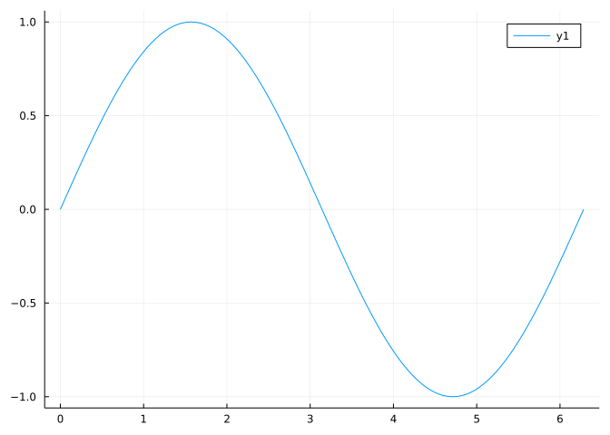
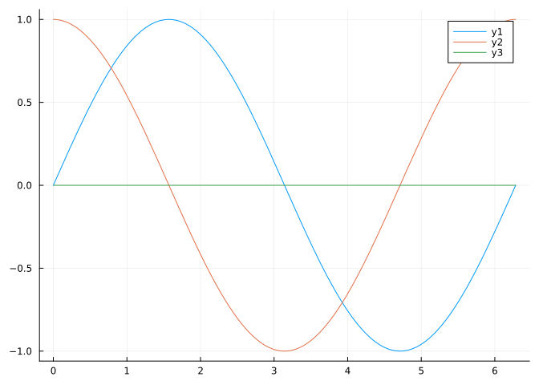
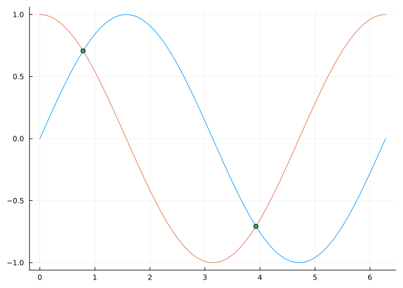
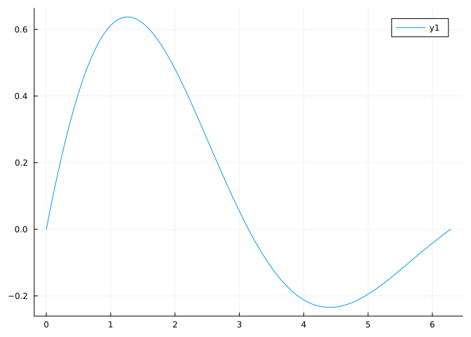
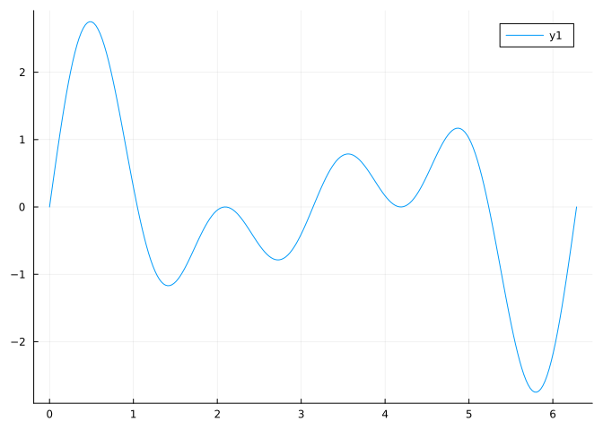
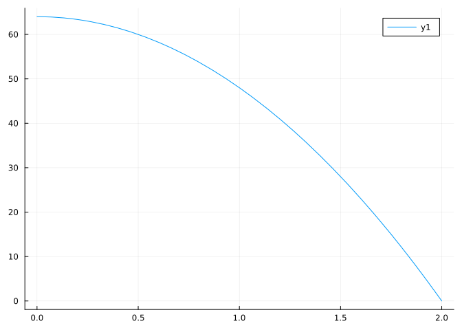

using Pkg17 Overview of Julia commands
The Julia programming language is well suited as a computer accompaniment while learning the concepts of calculus. The following overview covers the language-specific aspects of the pre-calculus part of the Calculus with Julia notes.
17.1 Installing Julia
Julia is an open source project which allows anyone with a supported computer to use it. To install locally, the downloads page has several different binaries for installation. Additionally, the downloads page contains a link to a docker image. For Microsoft Windows, the new juilaup installer may be of interest; it is available from the Windows Store. Julia can also be compiled from source.
Julia can also be run through the web. The https://mybinder.org/ service in particular allows free access, though limited in terms of allotted memory and with a relatively short timeout for inactivity.
17.2 Interacting with Julia
At a basic level, Julia provides a means to read commands or instructions, evaluate those commands, and then print or return those commands. At a user level, there are many different ways to interact with the reading and printing. For example:
- The REPL. The
Juliaterminal is the built-in means to interact withJulia. AJuliaTerminal has a command prompt, after which commands are typed and then sent to be evaluated by theenterkey. The terminal may look something like the following where2+2is evaluated:
$ julia
_
_ _ _(_)_ | Documentation: https://docs.julialang.org
(_) | (_) (_) |
_ _ _| |_ __ _ | Type "?" for help, "]?" for Pkg help.
| | | | | | |/ _` | |
| | |_| | | | (_| | | Version 1.7.0 (2021-11-30)
_/ |\__'_|_|_|\__'_| | Official https://julialang.org/ release
|__/ |
julia> 2 + 2
4- An IDE. For programmers, an integrated development environment is often used to manage bigger projects.
JuliahasJunoandVSCode. - A notebook. The Project Juptyer provides a notebook interface for interacting with
Juliaand a moreIDEstylejupyterlabinterface. A jupyter notebook has cells where commands are typed and immediately following is the printed output returned byJulia. The output of a cell depends on the state of the kernel when the cell is computed, not the order of the cells in the notebook. Cells have a number attached, showing the execution order. TheJuypternotebook is used bybinderand can be used locally through theIJuliapackage. This notebook has the ability to display many different types of outputs in addition to plain text, such as images, marked up math text, etc. - The Pluto package provides a reactive notebook interface. Reactive means when one “cell” is modified and executed, the new values cascade to all other dependent cells which in turn are updated. This is very useful for exploring a parameter space, say. Pluto notebooks can be exported as HTML files which make them easy to read online and – by clever design – embed the
.jlfile that can run throughPlutoif it is downloaded.
The Pluto interface has some idiosyncracies that need explanation:
- Cells can only have one command within them. Multiple-command cells must be contained in a
beginblock or aletblock. - By default, the cells are reactive. This means when a variable in one cell is changed, then any references to that variable are also updated – like a spreadsheet. This is fantastic for updating several computations at once. However it means variable names can not be repeated within a page. Pedagogically, it is convenient to use variable names and function names (e.g.,
xandf) repeatedly, but this is only possible if they are within aletblock or a function body. - To not repeat names, but to be able to reference a value from cell-to-cell, some Unicode variants are used within a page. Visually these look familiar, but typing the names requires some understanding of Unicode input. The primary usages is bold italic (e.g.,
\bix[tab]or\bif[tab]) or bold face (e.g.\bfx[tab]or\bff[tab]). - The notebooks snapshot the packages they depend on, which is great for reproducability, but may mean older versions are silently used.
17.3 Augmenting base Julia
The base Julia installation has many features, but leaves many others to Julia’s package ecosystem. These notes use packages to provide plotting, symbolic math, access to special functions, numeric routines, and more.
Within Pluto, using add-on packages is very simple, as Pluto downloads and installs packages when they are requested through a using or import directive.
For other interfaces to Julia some more detail is needed.
The Julia package manager makes add-on packages very easy to install.
Julia comes with just a few built-in packages, one being Pkg which manages subsequent package installation. To add more packages, we first must load the Pkg package. This is done by issuing the following command:
The using command loads the specified package and makes all its exported values available for direct use. There is also the import command which allows the user to select which values should be imported from the package, if any, and otherwise gives access to the new functionality through the dot syntax.
Packages need to be loaded just once per session.
To use Pkg to “add” another package, we would have a command like:
Pkg.add("CalculusWithJulia")This command instructs Julia to look at its general registry for the CalculusWithJulia.jl package, download it, then install it. Once installed, a package only needs to be brought into play with the using or import commands.
Note
In a terminal setting, there is a package mode, entered by typing ] as the leading character and exited by entering <backspace> at a blank line. This mode allows direct access to Pkg with a simpler syntax. The command above would be just add CalculusWithJulia.)
Packages can be updated through the command Pkg.update(), and removed with Pkg.rm(pkgname).
By default packages are installed in a common area. It may be desirable to keep packages for projects isolated. For this the Pkg.activate command can be used. This feature allows a means to have reproducible environments even if Julia or the packages used are upgraded, possibly introducing incompatabilities.
For these notes, the following packages, among others, are used:
Pkg.add("CalculusWithJulia") # for some simplifying functions and a few packages (SpecialFunctions, ForwardDiff)
Pkg.add("Plots") # for basic plotting
Pkg.add("SymPy") # for symbolic math
Pkg.add("Roots") # for solving `f(x)=0`
Pkg.add("QuadGk") # for integration
Pkg.add("HQuadrature") # for higher-dimensional integration17.4 Julia commands
In a Jupyter notebook or Pluto notebook, commands are typed into a notebook cell:
2 + 2 # use shift-enter to evaluate4Commands are executed by using shift-enter or a run button near the cell.
In Jupyter multiple commands per cell are allowed. In Pluto, a begin or let block is used to collect multiple commmands into a single cell. Commands may be separated by new lines or semicolons.
On a given line, anything after a # is a comment and is not processed.
The results of the last command executed will be displayed in an output area. Separating values by commas allows more than one value to be displayed. Plots are displayed when the plot object is returned by the last executed command.
In Jupyter, the state of the notebook is determined by the cells executed along with their order. The state of a Pluto notebook is a result of all the cells in the notebook being executed. The cell order does not impact this and can be rearranged by the user.
17.5 Numbers, variable types
Julia has many different number types beyond the floating point type employed by most calculators. These include
- Floating point numbers:
0.5 - Integers:
2 - Rational numbers:
1//2 - Complex numbers
2 + 0im
Julia’s parser finds the appropriate type for the value, when read in. The following all create the number \(1\) first as an integer, then a rational, then a floating point number, again as floating point number, and finally as a complex number:
1, 1//1, 1.0, 1e0, 1 + 0im(1, 1//1, 1.0, 1.0, 1 + 0im)As much as possible, operations involving certain types of numbers will produce output of a given type. For example, both of these divisions produce a floating point answer, even though mathematically, they need not:
2/1, 1/2(2.0, 0.5)Some powers with negative bases, like (-3.0)^(1/3), are not defined. However, Julia provides the special-case function cbrt (and sqrt) for handling these.
Integer operations may silently overflow, producing odd answers, at first glance:
2^640(Though the output is predictable, if overflow is taken into consideration appropriately.)
When different types of numbers are mixed, Julia will usually promote the values to a common type before the operation:
(2 + 1//2) + 0.53.0Julia will first add 2 and 1//2 promoting 2 to rational before doing so. Then add the result, 5//2 to 0.5 by promoting 5//2 to the floating point number 2.5 before proceeding.
Julia uses a special type to store a handful of irrational constants such as pi. The special type allows these constants to be treated without round off, until they mix with other floating point numbers. There are some functions that require these be explicitly promoted to floating point. This can be done by calling float.
The standard mathematical operations are implemented by +, -, *, /, ^. Parentheses are used for grouping.
17.5.1 Vectors
A vector is an indexed collection of similarly typed values. Vectors can be constructed with square brackets (syntax for concatenation):
[1, 1, 2, 3, 5, 8]6-element Vector{Int64}:
1
1
2
3
5
8Values will be promoted to a common type (or type Any if none exists). For example, this vector will have type Float64 due to the 1/3 computation:
[1, 1//2, 1/3]3-element Vector{Float64}:
1.0
0.5
0.3333333333333333(Vectors are used as a return type from some functions, as such, some familiarity is needed.)
Regular arithmetic sequences can be defined by either:
- Range operations:
a:h:bora:bwhich produces a generator of values starting ataseparated byh(his1in the last form) until they reachb. - The
rangefunction:range(a, b, length=n)which produces a generator ofnvalues betweenaandb;
These constructs return range objects. A range object compactly stores the values it references. To see all the values, they can be collected with the collect function, though this is rarely needed in practice.
Random sequences are formed by rand, among others:
rand(3)3-element Vector{Float64}:
0.29229767832391995
0.7059536733909104
0.501475381514961The call rand() returns a single random number (in \([0,1)\).)
17.6 Variables
Values can be assigned variable names, with =. There are some variants
u = 2
a_really_long_name = 3
a0, b0 = 1, 2 # multiple assignment
a1 = a2 = 0 # chained assignment, sets a2 and a1 to 00The names can be short, as above, or more verbose. Variable names can’t start with a number, but can include numbers. Variables can also include Unicode or even be an emoji.
α, β = π/3, π/4(1.0471975511965976, 0.7853981633974483)We can then use the variables to reference the values:
u + a_really_long_name + a0 - b0 + α5.047197551196597Within Pluto, names are idiosyncratic: within the global scope, only a single usage is possible per notebook; functions and variables can be freely renamed; structures can be redefined or renamed; …
Outside of Pluto, names may be repurposed, even with values of different types (Julia is a dynamic language), save for (generic) function names, which have some special rules and can only be redefined as another function. Generic functions are central to Julia’s design. Generic functions use a method table to dispatch on, so once a name is assigned to a generic function, it can not be used as a variable name; the reverse is also true.
17.7 Functions
Functions in Julia are first-class objects. In these notes, we often pass them as arguments to other functions. There are many built-in functions and it is easy to define new functions.
We “call” a function by passing argument(s) to it, grouped by parentheses:
sqrt(10)
sin(pi/3)
log(5, 100) # log base 5 of 1002.8613531161467867Without parentheses, the name (usually) refers to a generic name and the output lists the number of available implementations (methods).
loglog (generic function with 45 methods)17.7.1 Built-in functions
Julia has numerous built-in mathematical functions, we review a few here:
Powers logs and roots
Besides ^, there are sqrt and cbrt for powers. In addition basic functions for exponential and logarithmic functions:
sqrt, cbrt
exp
log # base e
log10, log2, # also log(b, x)Trigonometric functions
The 6 standard trig functions are implemented; their implementation for degree arguments; their inverse functions; and the hyperbolic analogs.
sin, cos, tan, csc, sec, cot
asin, acos, atan, acsc, asec, acot
sinh, cosh, tanh, csch, sech, coth
asinh, acosh, atanh, acsch, asech, acothIf degrees are preferred, the following are defined to work with arguments in degrees:
sind, cosd, tand, cscd, secd, cotdUseful functions
Other useful and familiar functions are defined:
abs: absolute valuesign: is \(\lvert x \rvert/x\) except at \(x=0\), where it is \(0\).floor,ceil: greatest integer less or least integer greatermax(a,b),min(a,b): larger (or smaller) ofaorbmaximum(xs),minimum(xs): largest or smallest of the collection referred to byxs
In a Pluto session, the “Live docs” area shows inline documentation for the current object.
For other uses of Julia, the built-in documentation for an object is accessible through a leading ?, say, ?sign. There is also the @doc macro, for example:
@doc sign17.7.2 User-defined functions
Simple mathematical functions can be defined using standard mathematical notation:
f(x) = -16x^2 + 100x + 2f (generic function with 1 method)The argument x is passed into the body of function.
Other values are found from the environment where defined:
a = 1
f(x) = 2*a + x
f(3) # 2 * 1 + 3
a = 4
f(3) # now 2 * 4 + 311User-defined functions can have \(0\), \(1\) or more arguments:
area(w, h) = w*harea (generic function with 1 method)Julia makes different methods for generic function names, so function definitions whose argument specification is different are for different uses, even if the name is the same. This is polymorphism. The practical use is that it means users need only remember a much smaller set of function names, as attempts are made to give common expectations to the same name. (That is, + should be used only for “add” ing objects, however defined.)
Functions can be defined with keyword arguments that may have defaults specified:
f(x; m=1, b=0) = m*x + b # note ";"
f(1) # uses m=1, b=0 -> 1 * 1 + 0
f(1, m=10) # uses m=10, b=0 -> 10 * 1 + 0
f(1, m=10, b=5) # uses m=10, b=5 -> 10 * 1 + 515Longer functions can be defined using the function keyword, the last command executed is returned:
function 𝒇(x)
y = x^2
z = y - 3
z
end𝒇 (generic function with 1 method)Functions without names, anonymous functions, are made with the -> syntax as in:
x -> cos(x)^2 - cos(2x)#20 (generic function with 1 method)These are useful when passing a function to another function or when writing a function that returns a function.
17.8 Conditional statements
Julia provides the traditional if-else-end statements, but more conveniently has a ternary operator for the simplest case:
our_abs(x) = (x < 0) ? -x : xour_abs (generic function with 1 method)17.9 Looping
Iterating over a collection can be done with the traditional for loop. However, there are list comprehensions to mimic the definition of a set:
[x^2 for x in 1:10]10-element Vector{Int64}:
1
4
9
16
25
36
49
64
81
100Comprehensions can be filtered through the if keyword
[x^2 for x in 1:10 if iseven(x)]5-element Vector{Int64}:
4
16
36
64
100This is more efficient than creating the collection then filtering, as is done with:
filter(iseven, [x^2 for x in 1:10])5-element Vector{Int64}:
4
16
36
64
10017.10 Broadcasting, mapping
A function can be applied to each element of a vector through mapping or broadcasting. The latter is implemented in a succinct notation. Calling a function with a “.” before its opening “(” will apply the function to each individual value in the argument:
xs = [1,2,3,4,5]
sin.(xs) # gives back [sin(1), sin(2), sin(3), sin(4), sin(5)]5-element Vector{Float64}:
0.8414709848078965
0.9092974268256817
0.1411200080598672
-0.7568024953079282
-0.9589242746631385For “infix” operators, the dot precedes the operator, as in this example instructing pointwise multiplication of each element in xs:
xs .* xsAlternatively, the more traditional map can be used:
map(sin, xs)5-element Vector{Float64}:
0.8414709848078965
0.9092974268256817
0.1411200080598672
-0.7568024953079282
-0.958924274663138517.11 Plotting
Plotting is not built-in to Julia, rather added through add-on packages. Julia’s Plots package is an interface to several plotting packages. We mention plotly (built-in) for web based graphics, pyplot, and gr (also built into Plots) for other graphics.
We must load Plots before we can plot (and it must be installed before we can load it):
using PlotsWith Plots loaded, we can plot a function by passing the function object by name to plot, specifying the range of x values to show, as follows:
plot(sin, 0, 2pi) # plot a function - by name - over an interval [a,b]
!!! note This is in the form of the basic pattern employed: verb(function_object, arguments...). The verb in this example is plot, the object sin, the arguments 0, 2pi to specify [a,b] domain to plot over.
Plotting more than one function over [a,b] is achieved through the plot! function, which modifies the existing plot (plot creates a new one) by adding a new layer:
plot(sin, 0, 2pi)
plot!(cos, 0, 2pi)
plot!(zero, 0, 2pi) # add the line y=0
Individual points are added with scatter or scatter!:
plot(sin, 0, 2pi, legend=false)
plot!(cos, 0, 2pi)
scatter!([pi/4, pi+pi/4], [sin(pi/4), sin(pi + pi/4)])
(The extra argument legend=false suppresses the automatic legend drawing. There are many other useful arguments to adjust a graphic. For example, passing markersize=10 to the scatter! command would draw the points larger than the default.)
Plotting an anonymous function is a bit more immediate than the two-step approach of defining a named function then calling plot with this as an argument:
plot( x -> exp(-x/pi) * sin(x), 0, 2pi)
The scatter! function used above takes two vectors of values to describe the points to plot, one for the \(x\) values and one for the matching \(y\) values. The plot function can also produce plots with this interface. For example, here we use a comprehension to produce y values from the specified x values:
xs = range(0, 2pi, length=251)
ys = [sin(2x) + sin(3x) + sin(4x) for x in xs]
plot(xs, ys)
17.12 Equations
Notation for Julia and math is similar for functions - but not for equations. In math, an equation might look like:
\[ x^2 + y^2 = 3 \]
In Julia the equals sign is only for assignment and mutation. The left-hand side of an equals sign in Julia is reserved for a) variable assignment; b) function definition (via f(x) = ...); c) indexed mutation of a vector or array; d) mutation of fields in a structure. (Vectors are indexed by a number allowing retrieval and mutation of the stored value in the container. The notation mentioned here would be xs[2] = 3 to mutate the 2nd element of xs to the value 3.
17.13 Symbolic math
Symbolic math is available through an add-on package SymPy (among others). Once loaded, symbolic variables are created with the macro @syms:
using SymPy@syms x a b c(x, a, b, c)(A macro rewrites values into other commands before they are interpreted. Macros are prefixed with the @ sign. In this use, the “macro” @syms translates x a b c into a command involving SymPys symbols function.)
Symbolic expressions - unlike numeric expressions - are not immediately evaluated, though they may be simplified:
p = a*x^2 + b*x + c
\[
a x^{2} + b x + c
\]
To substitute a value, we can use Julia’s pair notation (variable=>value):
p(x=>2), p(x=>2, a=>3, b=>4, c=>1)(4*a + 2*b + c, 21)This is convenient notation for calling the subs function for SymPy.
SymPy expressions of a single free variable can be plotted directly:
plot(64 - (1/2)*32 * x^2, 0, 2)
- SymPy has functions for manipulating expressions:
simplify,expand,together,factor,cancel,apart, \(...\) - SymPy has functions for basic math:
factor,roots,solve,solveset, \(\dots\) - SymPy has functions for calculus:
limit,diff,integrate, \(\dots\)